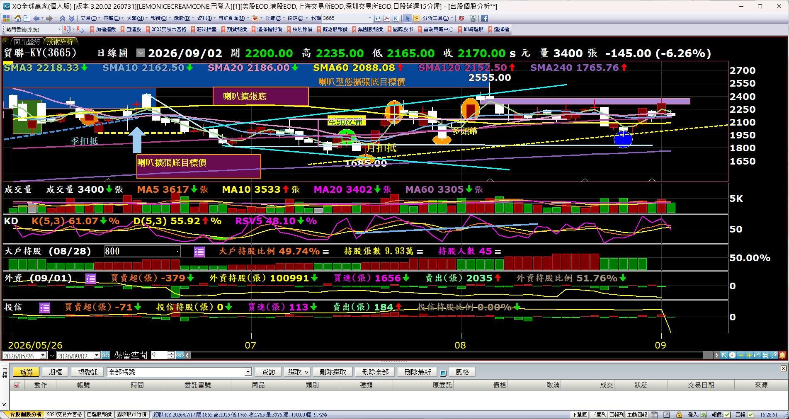

📣 零基礎台股技術分析
喇叭擴張底
價格高點更高＋低點更低
像一支向右打開的喇叭 📣
📉
1. 先下跌
常出現在跌勢後或底部區。
📣
2. 越震越大
買方越追越高，賣方越殺越低。
🚀
3. 等突破
站上喇叭上緣，才是偏多確認。
最重要：看到喇叭 ≠ 馬上買
✅ 比較漂亮的確認
① 收盤站上上緣 ② 最好成交量增加 ③ 回測上緣不跌回型態內
🎢
型態內很容易追高殺低
🪤
盤中突破可能是假突破
⚠️
不是必漲也可能向下跌破
📸 真實案例：把示意圖套回台股
先不要急著看指標。第一眼只找三件事：擴張邊界、突破位置、突破後是否守住。
案例 1
聯發科（2454）

📣 找到擴張區圖中藍色區域內，高低點的距離逐步放大。
⬆️ 看上緣突破橘色箭頭標示多次往上嘗試，重點不是猜底，而是等價格脫離型態。
🎯 突破後看延伸突破後再觀察前高、壓力區與量價是否配合。
案例 2
貿聯-KY（3665）

↙️↗️ 邊界張開青色上下邊界向右擴張，是最直觀的「喇叭」外型。
✅ 突破確認圖中已把突破與回測位置標出，適合練習「先等確認」的概念。
⚠️ 回測仍可能劇烈擴張型態本身波動大，突破後仍可能拉回，不代表一路直線上漲。
三秒鐘判斷 👀
📉 前面有跌？ → 📣 振幅越來越大？ → 🚀 收盤站上上緣？
教育用途，不構成投資建議。案例用來辨識型態，不代表個股未來必然依照相同路徑發展；實務上仍應搭配成交量、支撐壓力與風險管理。